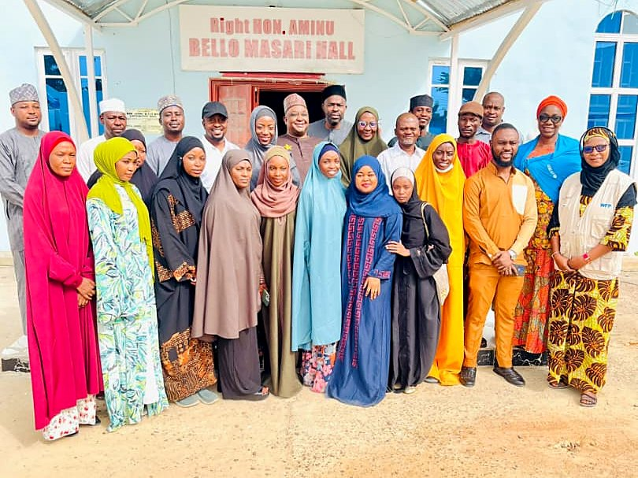
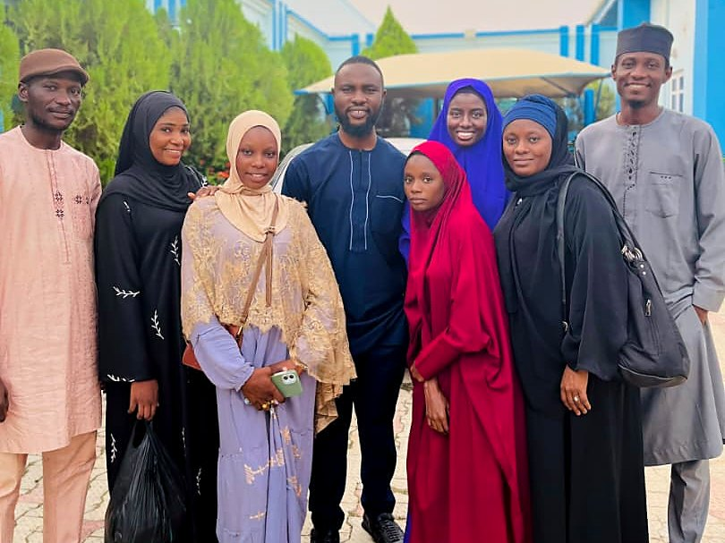
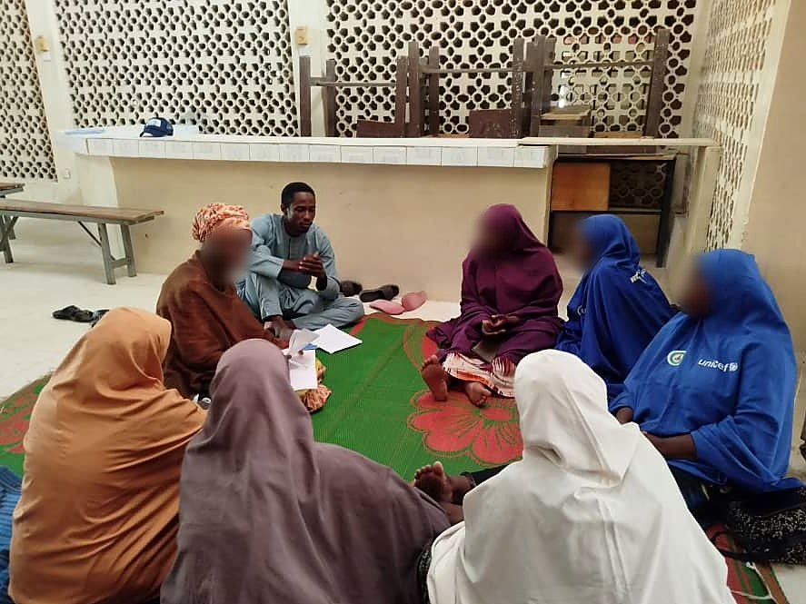

UNICEF and WFPJoint Action to Stop Wasting
Field lead and trainer
2026Reporting due December 2026
Katsina State
How UNICEF and WFP's joint approach to child malnutrition works in practice
The Nigeria arm of a five-country study asking what has been changed on the ground and what could work better. I recruited and trained the field team, and I now oversee its data collection.



14.0 to 16.2Average trainee score out of 20, before and after training
7 of 9Trainees whose scores improved
80 to 100%Scores on the consent and child protection questions
12.1 of 15My field team's score on the joint pre-test, highest of three teams
- Trained six enumerators and a supervisor to run key informant interviews and focus group discussions, with a step-by-step guide to interviewing and a field brief I prepared.
- Tested the team before and after training, then went back over weak spots such as probing with refresher lessons and quizzes on WhatsApp.
- Ran the pilot on 8 October 2026 to test the tools, team pairings, recording and timing, then led the team on site into fieldwork, taking part in key informant interviews.
- Built the transcription system above and an automated contracting system for the team, prepared the field budget and write the progress updates.
Key informant interviewsFocus group discussionsEnumerator trainingConsent and child protection